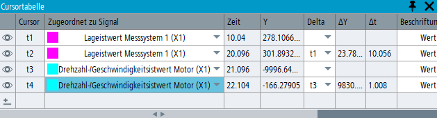

Die Messcursors können in den folgenden zwei Betriebsarten betrieben werden:
Aktiver Signalmodus
Wenn eine neue Trace-Sitzung erstellt wird, sind standardmäßig zwei Cursors vorhanden. Die Cursors können nur zusammen ein- und ausgeschaltet werden und werden dem aktuell aktiven Signal zugeordnet. Wenn das aktive Signal wechselt, werden beide Cursors automatisch dem neuen aktiven Signal zugewiesen.
Wenn den Cursors in der Cursortabelle ein weiteres Signal zugewiesen wird, wird das zugewiesene Signal zum aktiven Signal.
Individueller Modus
Sie können bis zu 10 Cursors mithilfe der Cursortabelle (Expert-Trace) erstellen. Wenn die Trace-Sitzung mehr als 2 Cursors enthält, wechseln Sie in den "individuellen Modus". Dadurch können Cursor individuell verschiedenen Signalen zugeordnet werden. Der Wechsel des aktiven Signals hat keine Auswirkungen darauf, welchen Signalen die Cursor zugewiesen sind.
Die Sichtbarkeit jedes Cursors kann in der Cursortabelle einzeln ein- und ausgeschaltet werden. (Aktionen über die Tastatur, die Symbolleiste oder das Kontextmenü, mit denen die Sichtbarkeit des Cursors umgeschaltet wird, wirken sich weiterhin auf alle Cursors aus.)
Der Wechsel zum "individuellen Modus" ist permanent, solange Sie sich in derselben Trace-Sitzung befinden. Selbst wenn Sie die zusätzlichen Cursors löschen, bis nur die ersten beiden vorhanden sind, wird nicht zum "aktiven Signalmodus" zurückgewechselt.
Die numerischen Werte der Signale an den aktuellen Cursorpositionen, sowie die Unterschiede zwischen den Cursorwerten, werden in den Cursorbeschriftungen und in der Cursortabelle angezeigt. Nur bei den ersten beiden Cursors (t1 und t2) werden die numerischen Werte auch in der Signaltabelle angezeigt. Falls ein Signal an der aktuellen Cursorposition keinen Messwert hat, wird der Wert des vorherigen Messpunkts angezeigt, z. B. wenn Signale mit unterschiedlichen Abtastraten aufgezeichnet wurden.
Die Farbe der Cursorlinien und der Cursorbeschriftungs-Hintergründe folgt der Signalkurvenfarbe. Der Beschriftungstext ist weiß über dunklen Hintergrundfarben und schwarz über hellen Hintergrundfarben.
Das Format der Cursorbeschriftungen können Sie im Kontextmenü oder in der Cursortabelle konfigurieren. Die Sichtbarkeit, Format und Positionen des Trace-Widget-Cursors werden in der Trace-Sitzungsdatei gespeichert und können wiederhergestellt werden, wenn die Session-Datei erneut geladen wird.
Das FFT-Widget hat nur 2 Cursor, die im "aktiven Signalmodus" arbeiten und deren Beschriftungsformat im FFT-Kontextmenü konfiguriert werden kann. Eigenschaften von FFT-Cursors werden nicht in der Trace-Sitzungsdatei gespeichert.
Funktion | Tastatur | Maus |
|---|---|---|
Cursor umschalten (ein/aus) | <STRG+LEER> |
|
Cursor in die Standardposition versetzen1) | <STRG+UMSCHALT+LEER> |
|
1. oder 2. (sichtbaren) vertikalen Cursor aktivieren | <STRG+UMSCHALT+1> | Mit linker Maustaste in Cursorzeile klicken |
1. oder 2. (sichtbaren) vertikalen Cursor deaktivieren | <STRG+UMSCHALT+1> | Mit linker Maustaste in leeren Diagrammbereich klicken |
Nächsten (sichtbaren) Cursor aktivieren | <TAB> | Mit linker Maustaste in Cursorzeile klicken |
Einen Messcursor können Sie verschieben, indem Sie ihn bei gedrückter linker Maustaste ziehen oder auf einem Touchscreen durch Ziehen mit dem Finger.
Funktion | Tastatur | Beschreibung |
|---|---|---|
Alle Messstellen ein Schritt | <ALT> + Pfeil nach links/rechts, einmal drücken | Wenn Sie diese Tastenkombination einmal drücken, wird der aktive Cursor in der ausgewählten Richtung zur nächsten Messstelle bewegt. |
Grobpositionierung in einem Schritt | <ALT> + <UMSCHALT> + Pfeil nach links/rechts, einmal drücken | Wenn Sie diese Tastenkombination einmal drücken, wird der aktive Cursor um 20 % des sichtbaren Bereichs in der ausgewählten Richtung bewegt. |
Kontinuierlich bewegen normale Geschwindigkeit | <ALT> + Pfeil nach links/rechts, drücken und halten | Wenn Sie diese Tastenkombination gedrückt halten, wird der aktive Cursor in normaler Geschwindigkeit in der ausgewählten Richtung kontinuierlich bewegt. |
Kontinuierlich bewegen, schnellere Geschwindigkeit | <ALT> + <UMSCHALT> + Pfeil nach links/rechts, drücken und halten | Wenn Sie diese Tastenkombination gedrückt halten, wird der aktive Cursor in schneller Geschwindigkeit in der ausgewählten Richtung kontinuierlich bewegt. |
| Hinweis |
Für die Nutzung dieser Funktion ist eine Expert-Trace-Lizenz erforderlich, siehe "Expert-Trace-Funktionen". |
Die Cursortabelle wird über das Symbol in der Symbolleiste geöffnet und geschlossen. Sie kann auch über das Symbol X auf dem Fensterrahmen geschlossen werden. Das Widget kann im Anwendungsfenster angedockt oder es kann (nur auf PC/IPC) abgedockt und als frei bewegliches Fenster verwendet werden.
Die Cursortabelle zeigt die Eigenschaften der aktuell vorhandenen Cursors an, einschließlich Sichtbarkeit, Werte für Zeit (X) und Signal (Y) an der aktuellen Cursorposition, Differenzen zwischen den Cursorwerten und Bezeichnungsformate.
Solange entweder der Cursor t1 oder t2 sichtbar ist, werden die Werte aller Signale an den aktuellen Cursorpositionen auch in der Signaltabelle angezeigt. Wenn beide Cursors t1 und t2 sichtbar sind, wird auch die Differenz zwischen ihnen angezeigt.
Um einen Cursor ein- oder auszuschalten (einblenden/ausblenden), verwenden Sie das zugehörige Augensymbol in der Cursortabelle.
So weisen Sie einen Cursor einem anderen Signal zu:
Wählen Sie in der Klappliste den Signalnamen aus. Ein Cursor kann nur einem sichtbaren Signal zugewiesen werden. Ausgeblendete Signale sind in der Liste ausgegraut.
Setzen Sie den Fokus auf das Identifikatorfeld des Cursors in der Cursortabelle, also auf das Feld, das t1, t2 usw. anzeigt. Klicken Sie dann auf die Signalkurve in dem Trace-Widget, dem Sie den ausgewählten Cursor zuweisen möchten.
Um einen neuen Cursor zu erstellen, klicken Sie auf das Symbol "Neuen Messcursor erstellen" in der letzten Zeile der Tabelle. Der neue Cursor wird demselben Signal wie der letzte vorhandene Cursor in der Tabelle zugewiesen. Es können maximal 10 Cursors erstellt werden.
Um einen Cursor zu löschen, klicken Sie in der Zeile des ausgewählten Cursors auf das Papierkorbsymbol. Die ersten beiden Cursor sind immer vorhanden, sie können nicht gelöscht werden.
Um die Differenz zwischen den horizontalen und vertikalen Positionen zweier Cursors zu berechnen, wählen Sie den Identifikator eines anderen Cursors in der Klappliste "Delta" aus. Die Differenzwerte sind in der Cursortabelle und in einer zweiten Cursorbeschriftung (Differenzbeschriftung) sichtbar, die auf dem ausgewählten Messcursor angezeigt wird. Die Differenz zwischen den Signalwerten wird ohne Rücksicht darauf berechnet, ob die physikalischen Einheiten der beiden Signale identisch sind oder nicht.
Sie können Cursor einer Gruppe zuordnen, indem Sie einen neuen oder bestehenden Gruppennamen in die Spalte "Gruppe" der Cursortabelle eingeben. Dies funktioniert ähnlich wie das Erstellen von Skalierungsgruppen für Signale in der Signaltabelle.
Wenn Sie einen Cursor im Trace-Widget verschieben, der zu einer Gruppe gehört, bewegen sich alle Cursors in derselben Gruppe gemeinsam, wobei die Abstände zwischen ihnen erhalten bleiben.
Wenn der aktive Cursor mit der Maus oder mit der Tastatur bewegt wird, bewegt sich dieser Cursor nur auf vorhandene Messpunkte. Verknüpfte Cursors in derselben Gruppe können sich jedoch auf interpolierte Punkte der Signalkurve oder sogar innerhalb einer Unterbrechung bewegen, um den festen Abstand beizubehalten. In diesem Fall zeigt der verknüpfte Cursor die Daten des vorherigen Messpunkts an.
Um einen Cursor aus einer verknüpften Gruppe zu entfernen, löschen Sie seinen Gruppennamen in der Cursortabelle.
Cursorgruppen werden in der Sitzungsdatei gespeichert und wiederhergestellt, wenn die Sitzungsdatei geladen wird.